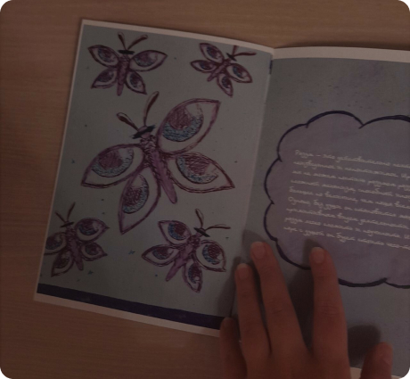
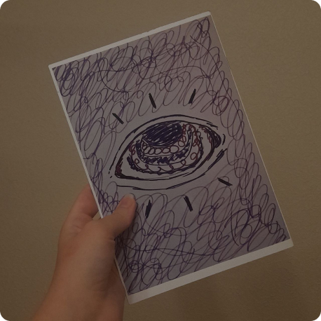
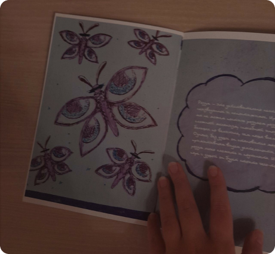
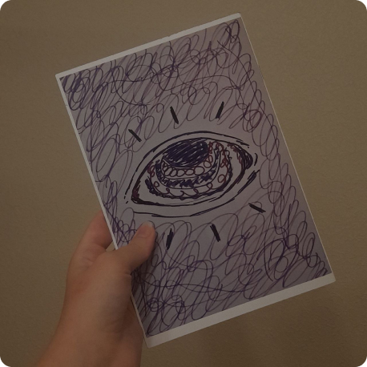

Проект зин “Разум” для выставки “Кто я?
Концепция работы отражает взгляд современного человека в 2031 год, который лишь на первый взгляд считается далёким от нас. В данном проекте в аспектах будущего рассматривается тема души и разума, двух важных составляющих в человеке. Текст выражает эмоции, а визуальное наполнение придаёт им форму. В симбиозе грань между словом и картинкой стирается, благодаря чему читатель перестаёт видеть и начинает чувствовать.
Смотреть проект